DNS
域名
域名 👉 www.baidu.com
域名的作用是帮助人类记忆网站地址，有了域名，就不用去记 IP 地址了
域名的类型有以下几种：
- 根域名：
.（通常省略） - 顶级域名：
.cn .com .net .us .uk .org ... - 二级域名：
baidu.com jd.com taobao.com - 三级域名：
自定义 www.baidu.com www.jd.com www.taobao.com - 四级域名：
自定义 www.pku.edu.cn mail.internal.jd.com
一般来说，购买二级域名后，三级、四级域名都是可以免费自定义的
在二级域名相同的情况下，两个不同的三级域名可以解析到不同的 ip
可以通过 cmd 里输入 ping www.baidu.com去获取百度服务器的ip地址
域名是 ip 地址的别名
ip 地址不能使用 https
localhost 是 127.0.0.1 的域名
DNS
域名虽然有助于记忆，但是网络传输和域名没有半毛钱关系
网络传输必须依靠 IP
所以，必须有一个东西，能够将域名转换成 IP 地址，这个东西就是 DNS 服务器，翻译成 IP 地址的过程称之为域名解析
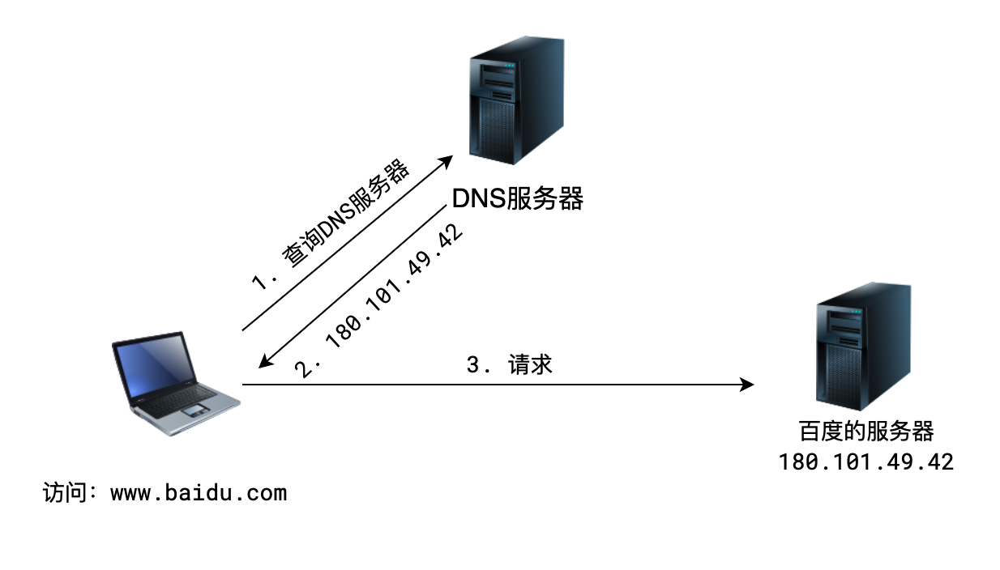
全世界认可的 DNS 服务器一共有三种，外加一种局部使用的本地 DNS 服务器，一共四种。
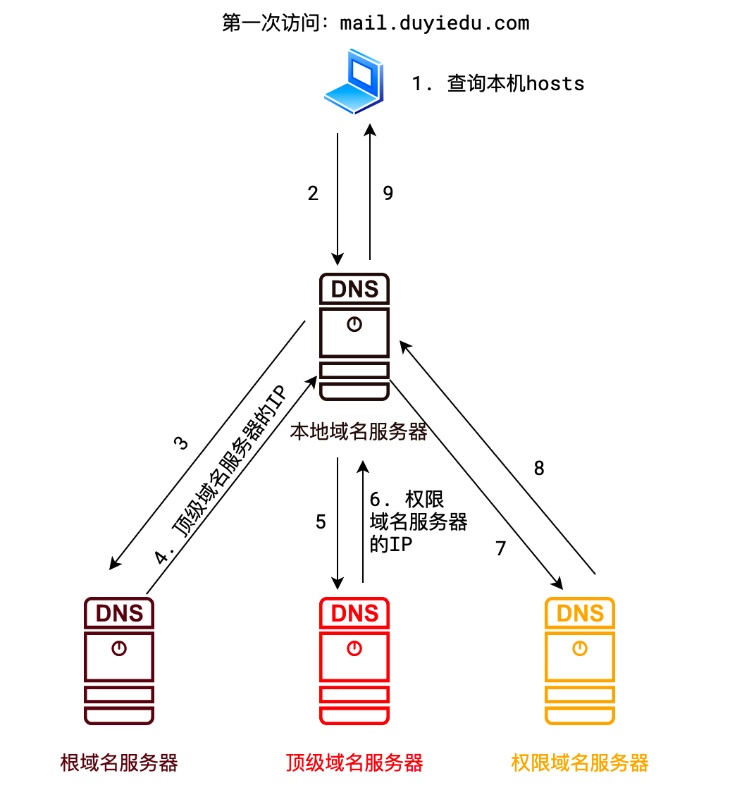
把 DNS 转化为 IP 的过程
注意：每一步，如果如果这个域名该给你什么 ip，他就不会再执行下去
1.查询本机 hosts
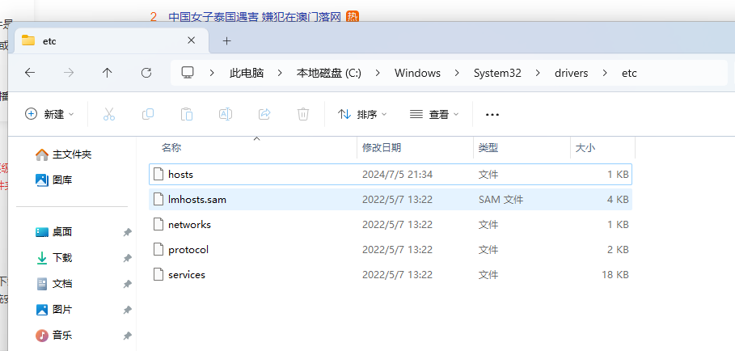
# For example:
#
# 102.54.94.97 rhino.acme.com # source server
# 38.25.63.10 x.acme.com # x client host
# localhost name resolution is handled within DNS itself.
# 127.0.0.1 localhost
# ::1 localhost
为什么输入 localhost 就能访问到本机就是因为有这个
2.本地域名服务器
比如学校机房，有一些网站你是不能访问的，这个时候学校机房服务器可以会配置，让你无法访问
自己电脑上也 DNS 服务器，就是自己的路由器，他充当了本地 DNS 服务器的角色，当然你也可以自己去设置
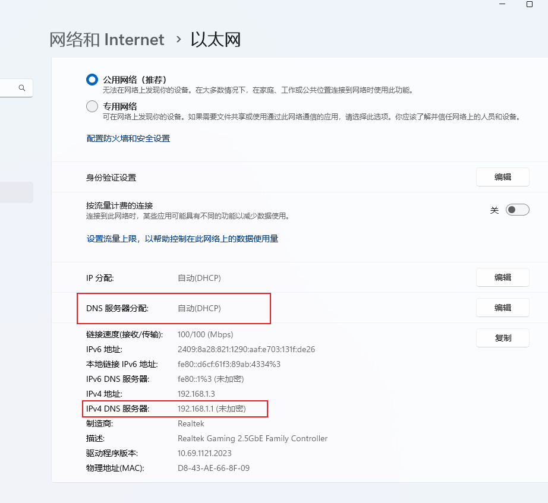
3.根域名服务器
他只会去找.com 有哪些域名服务器，给你一个寻找.com 域名服务器的 ip
4.顶级域名服务器
顶部域名服务器他可能也没有三级域名的地址，有就返回
没有就会给你一个权限域名服务器去查找 ip
注意
为了使得解析速度更快、查询的节点更少，上述每个节点都可能设置高速缓存来加速解析
DNS prefetching
DNS prefetching 允许浏览器在用户浏览时在后台对页面执行 DNS 查找。这最大限度地减少了延迟，因为一旦用户单击链接就已经进行了 DNS 查找。
假如有些第三方资源，可以在 html 头上先加上后续会用到要解析的 dns 域名。域名预解析
<!-- Prefetch DNS for external assets -->
<link rel="dns-prefetch" href="//fonts.googleapis.com" />
<link rel="dns-prefetch" href="//www.google-analytics.com" />
<link rel="dns-prefetch" href="//cdn.domain.com" />
五层网络模型

数据的封装和解封装
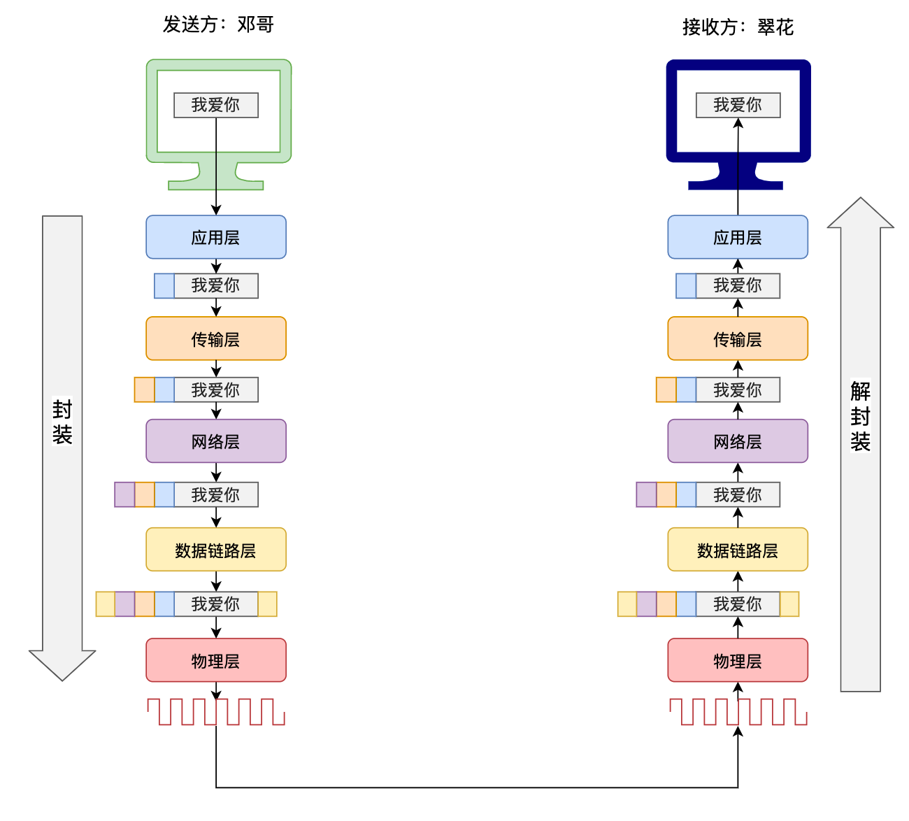
除了物理层以外，每一层都会进行封装与解封装在消息之前增加消息头
http 在应用层,我们常用的 header 就是 http 发送之前的消息头(封装)
四层、五层、七层
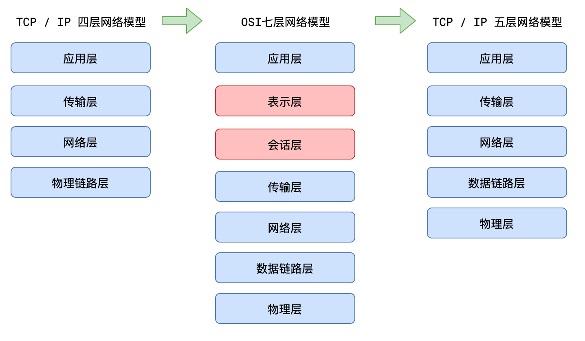
四层：合并数据链路层和物理层
OSI 七层只存在理论当中，实际应用的还是 5 层网络模型
总结
网络的五层模型从上到下分别为：应用层、传输层、网络层、数据链路层、物理层。在发送消息时，消息从上到下进行打包，每一层会在上一层基础上加包，而接受消息时，从下到上进行解包，最终得到原始信息。
其中：
应用层主要面向互联网中的应用场景，比如网页、邮件、文件中心等等，它的代表协议有 http、smtp、pop3、ftp、DNS 等等
传输层主要面向传输过程，比如 TCP 协议是为了保证可靠的传输，而 UDP 协议则是一种无连接的广播，它们提供了不同的传输方式
网络层主要解决如何定位目标以及如何寻找最优路径的问题，比如 IP 等等
数据链路层的作用是将数据在一个子网（广播域）内有效传输，MAC 地址、交换机都是属于该层的
物理层是要解决二进制数据到信号之间的互转问题，集线器、双绞线、同轴电缆等都是属于盖层的设备
加密
对称加密
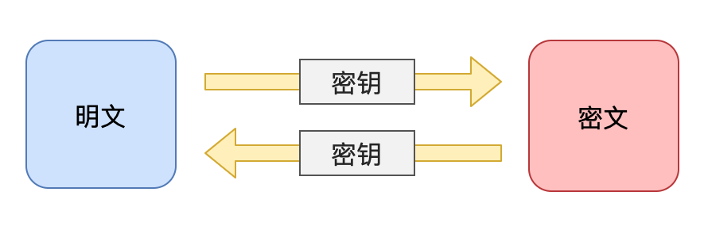
常见算法：DES、3DES、TDEA、Blowfish、RC5、IDEA
优点：加密、解密速度快，适合对大数据量进行加密
缺点：在网络中需要分发密钥，增加了密钥被窃取的风险
非对称加密
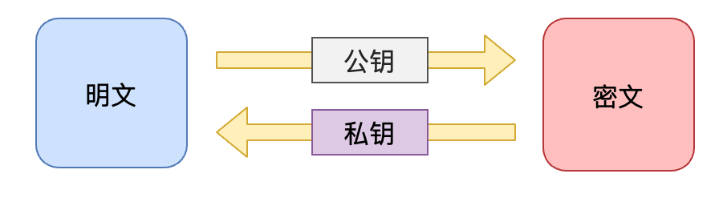
常见算法：RSA、Rabin、DSA、ECC、Elgamal、D-H
优点：安全（私钥仅被一方保存，不用于网络传输）
缺点：仅能一方进行解密
公钥加密，私钥解密（服务器保存私钥）
但这样只能浏览器给服务器发送加密内容
摘要/哈希/散列
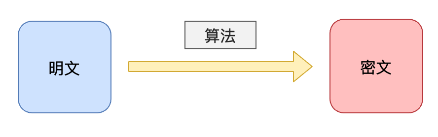
常见算法：MD4、MD5、SHA1
优点：密文占用空间小（定长的短字符串）；难以被破解
缺点：无法解密
文件打开协议
文件协议
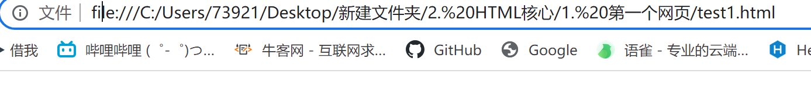
网络协议
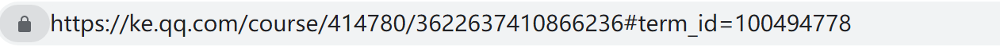
我们一般要了解的都是网络协议和学习网络协议
直接打开文件和本地服务器打开的区别
一个是 file 协议，另一个是 http 协议。
file 协议更多的是将该请求视为一个本地资源访问请求，和你使用资源管理器打开是一样的，等于打开一个 txt 文件，是纯粹的请求本地文件。
http 请求方式则是通过假架设一个 web 服务器，解析 http 协议的请求然后向浏览器返回资源信息。我们所开发的 html 文件最后必定是会以网页的形式部署在服务器上，通过 http 协议访问，所以我们开发中也尽可能模拟线上环境，架设本地服务器，来避免 file 协议与 http 协议实现过程中的某些差异性，如某些 API 的差异、跨域请求的差异等。
举个最容易验证的例子：在页面引入一张绝对路径的图片，即’/image/example.png’，然后分别通过这两种方式打开页面，file 协议会将资源请求到根路径，而 http 协议虽然也会请求到根路径，但是是相对本地架设的服务器的根路径，一般也就是项目文件夹的路径。
本地打开
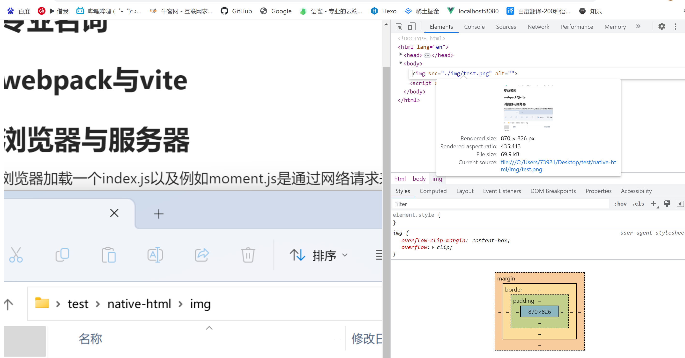
服务器打开
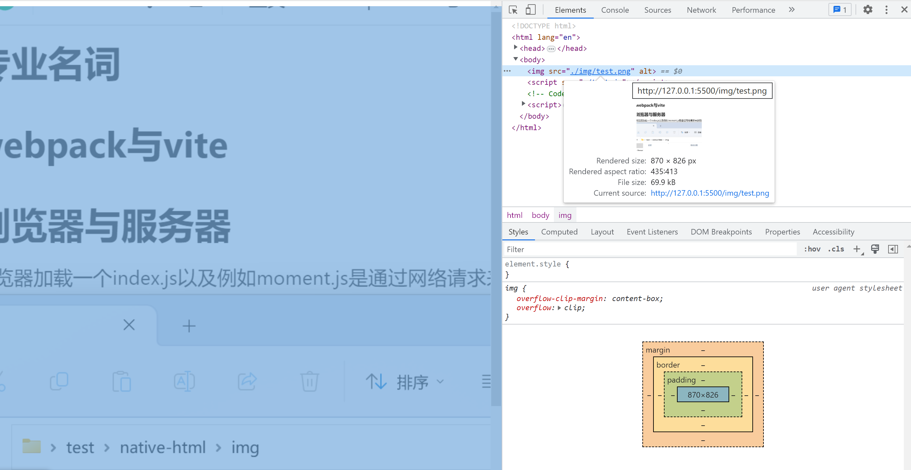